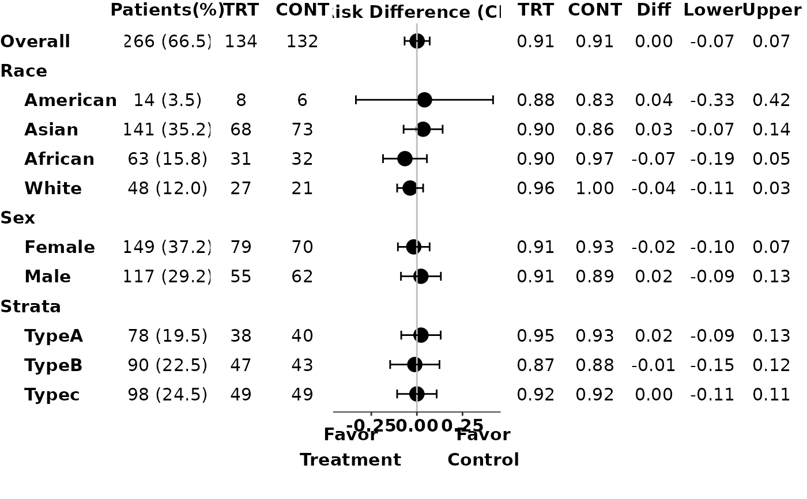
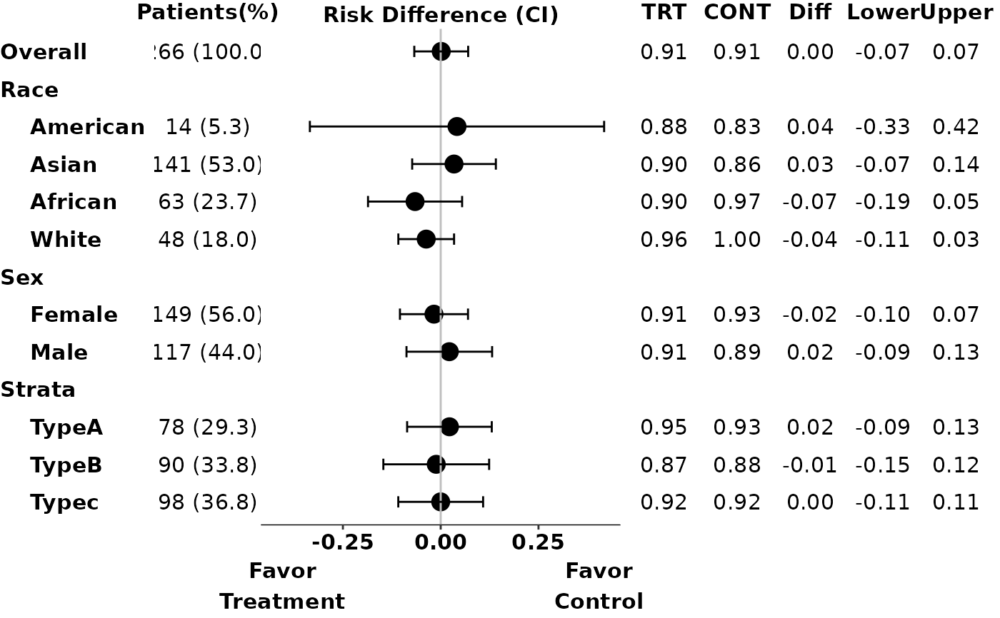

Draw adverse event category plot.
g_ae_sub(
id,
arm,
arm_sl,
subgroups,
subgroups_sl,
trt = levels(arm)[1],
ref = levels(arm)[2],
indent = 4,
subgroups_levels = NULL,
xmax = 0,
conf_level = 0.95,
diff_ci_method = c("wald", "waldcc", "ac", "score", "scorecc", "mn", "mee", "blj",
"ha", "beal"),
fontsize = 4,
arm_n = FALSE,
draw = TRUE
)(`vector`)
contains subject identifier. Usually it is ADAE$USUBJID.
(`factor`)
vector that contains arm information in analysis data.
For example, `ADAE$ACTARMCD`.
(`vector`)
contains the subject level treatment variable.
For example, ADSL$ACTARM.
(`data.frame`)
Variables to conduct analysis.
(`data.frame`)
Subject level variables to conduct analysis.
Usually from ADSL.
(`character`)
indicates the name of the treatment arm. Default is the second
level of arm.
(`character`)
indicates the name of the reference arm. Default is the first
level of arm.
(`numeric`)
non-negative integer where 0 means that the subgroup levels should not be indented
(`list`)
A nested named list of variables to conduct analysis.
The names of the nested lists are used to show as the label.
The children lists should start with "Total" = variable label,
followed by labels for each level of said variable. See example for reference.
(`numeric`)
maximum range for the x-axis.
x-axis range will be automatically assigned based on risk output when xmax is less than or equal to 0.
xmax is 0 by default
(`numeric`)
the confidence interval level, default is 0.95.
(`character`)
the method used to calculate confidence interval.
Default is "wald". Possible choices are methods supported in BinomDiffCI.
(`numeric`)
font size for the plot. It is the size used in ggplot2 with
default unit "mm", if you want "points" you will need to divide the point number by
ggplot2:::.pt.
(`logical`)
whether to display the N in each arm.
(`logical`)
whether to draw the plot.
grob object
there is no equivalent STREAM output
library(scda)
library(grid)
ADAE <- synthetic_cdisc_data("latest")$adae
ADSL <- synthetic_cdisc_data("latest")$adsl
id <- ADAE$USUBJID
arm <- ADAE$ACTARMCD
arm_sl <- as.character(ADSL$ACTARMCD)
subgroups_sl <- ADSL[, c("SEX", "RACE", "STRATA1")]
subgroups <- ADAE[, c("SEX", "RACE", "STRATA1")]
subgroups_levels <- list(
RACE = list(
"Total" = "Race",
"AMERICAN INDIAN OR ALASKA NATIVE" = "American",
"WHITE" = "White",
"ASIAN" = "Asian",
"BLACK OR AFRICAN AMERICAN" = "African"
),
STRATA1 = list(
"Total" = "Strata",
"A" = "TypeA",
"B" = "TypeB",
"C" = "Typec"
),
SEX = list(
"Total" = "Sex",
"M" = "Male",
"F" = "Female"
)
)
# Example 1
p1 <- g_ae_sub(id,
arm,
arm_sl,
subgroups,
subgroups_sl,
trt = "ARM A",
ref = "ARM C",
subgroups_levels = subgroups_levels,
arm_n = FALSE
)
grid::grid.newpage()
# Example 2: display number of patients in each arm
p2 <- g_ae_sub(id,
arm,
arm_sl,
subgroups,
subgroups_sl,
trt = "ARM A",
ref = "ARM C",
subgroups_levels = subgroups_levels,
arm_n = TRUE
)

grid::grid.newpage()
# Example 3: preprocess data to only include treatment and control arm patients
trt <- "ARM A"
ref <- "ARM C"
ADAE <- synthetic_cdisc_data("latest")$adae
ADSL <- synthetic_cdisc_data("latest")$adsl %>%
filter(ACTARMCD %in% c(trt, ref))
id <- ADAE$USUBJID
arm <- ADAE$ACTARMCD
arm_sl <- as.character(ADSL$ACTARMCD)
subgroups_sl <- ADSL[, c("SEX", "RACE", "STRATA1")]
subgroups <- ADAE[, c("SEX", "RACE", "STRATA1")]
subgroups_levels <- list(
RACE = list(
"Total" = "Race",
"AMERICAN INDIAN OR ALASKA NATIVE" = "American",
"WHITE" = "White",
"ASIAN" = "Asian",
"BLACK OR AFRICAN AMERICAN" = "African"
),
STRATA1 = list(
"Total" = "Strata",
"A" = "TypeA",
"B" = "TypeB",
"C" = "Typec"
),
SEX = list(
"Total" = "Sex",
"M" = "Male",
"F" = "Female"
)
)
p3 <- g_ae_sub(id,
arm,
arm_sl,
subgroups,
subgroups_sl,
trt,
ref,
subgroups_levels = subgroups_levels,
arm_n = FALSE
)
